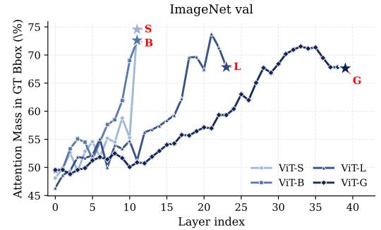

$A^2$：它直接触及通用 SSL ViT 表征的“定位 vs 语义”分工，对选择 DINO/MAE/CLIP 类 backbone 以及构建免训练适配器都有启发
提出一个反直觉经验结论：较小 SSL ViT 的注意力图对前景对象定位更好，而大模型更擅长局部语义表征；A^2 用无训练方式组合两者。
$A^2$: Smaller Self-Supervised ViTs Localize Better than Larger Ones Sreehari Rammohan, Huy Ha, Carl Vondrick；机构信息 arXiv 元数据未列出。 arXiv 原文链接
编号2606.03148优先级P0类别Visual SSL / representation会议arXiv方法把“where to look”和“what to extract”拆开：用较小自监督 ViT 的 attention peak 定位/裁剪前景区域，再用较大 ViT 对裁剪区域抽取更丰富 patch 表征。来源arXiv / OpenReview
先说结论。它直接触及通用 SSL ViT 表征的“定位 vs 语义”分工，对选择 DINO/MAE/CLIP 类 backbone 以及构建免训练适配器都有启发。 提出一个反直觉经验结论：较小 SSL ViT 的注意力图对前景对象定位更好，而大模型更擅长局部语义表征；A^2 用无训练方式组合两者。
Figureure 11 · : Attention hit rate vsFigure 11: Attention hit rate vs. model size across six pretraining families, on Waterbirds (left) and ImageNet val (right). Hit rate is the fraction of images where the arg max of the attention map falls inside the ground-truth bounding box. The DINOv2 and DINOv3 families show the cleanest inversescaling trend; MAE drops sharply from ViT-B/16 to ViT-L/16 on Waterbirds; OpenCLIP (dashed) breaks the trend, with ViT-B/16 at 0.166 on Waterbirds (well below the next size). Companion to Figure 2; see Table 3 for precise values.这张图/表用于判断 $A^2$ 的实验收益来自哪里。重点看替换、消融或跨模型设置下趋势是否一致，而不是只看单个最高分。

Figureure 9 · : Per-layer CLS-to-patches attention mass for DINOv2 with register tokFigure 9: Per-layer CLS-to-patches attention mass for DINOv2 with register tokens [8]. Stars mark each model’s last block (the layer used in our other figures). ViT-S and ViT-B peak at the last block; ViT-L peaks at block 21 of 24 and ViT-G at block 32 of 40, dropping 12–13 points on Waterbirds (left) and 4–6 points on ImageNet val (right) by the final block. Larger ViTs’ final blocks drift away from foreground localization while smaller ViTs concentrate localization in their last block. Appendix Figure 13 shows the same plot for DINOv2 without registers; per-layer hit-rate counterparts are in Appendix Figures 12 and 14.这张可视化用来解释 $A^2$ 学到的中间表征或对齐关系。重点看它是否支持正文里的机制判断。
核心问题
它直接触及通用 SSL ViT 表征的“定位 vs 语义”分工，对选择 DINO/MAE/CLIP 类 backbone 以及构建免训练适配器都有启发。
方法拆解
把“where to look”和“what to extract”拆开：用较小自监督 ViT 的 attention peak 定位/裁剪前景区域，再用较大 ViT 对裁剪区域抽取更丰富 patch 表征。
主要贡献
提出一个反直觉经验结论：较小 SSL ViT 的注意力图对前景对象定位更好，而大模型更擅长局部语义表征；A^2 用无训练方式组合两者。